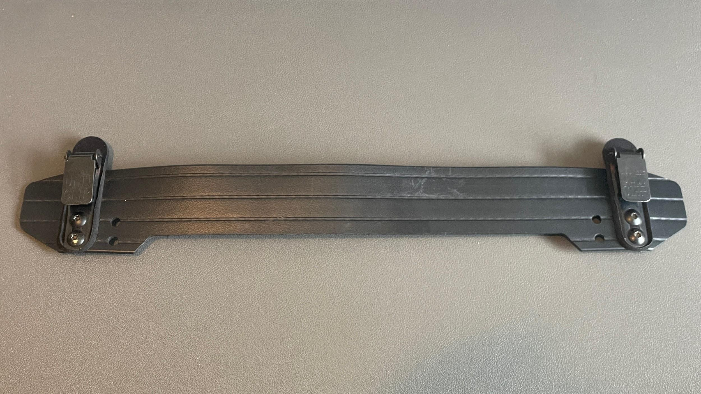
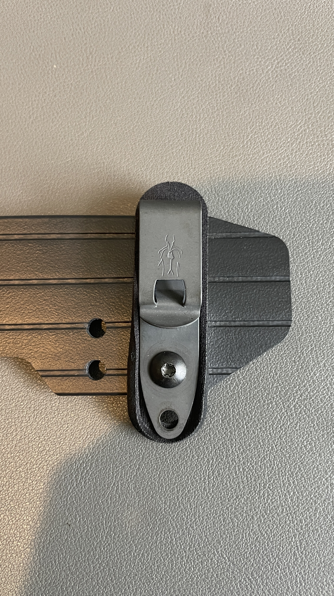
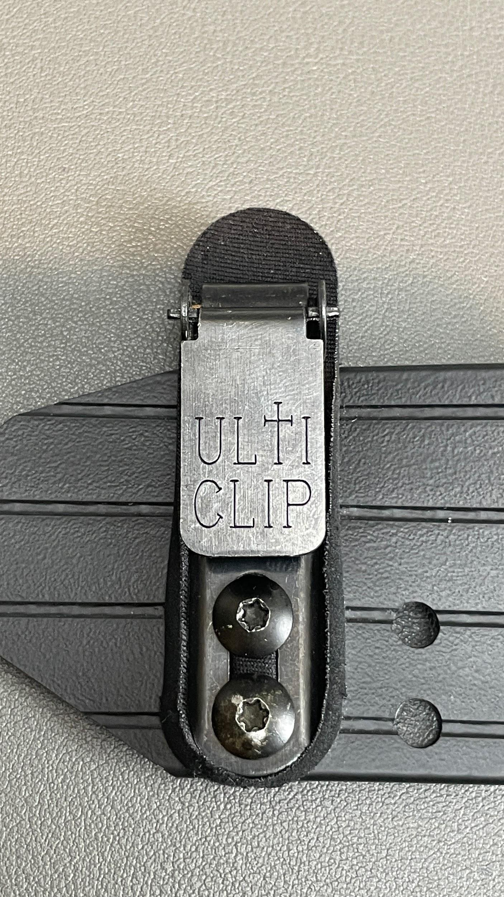
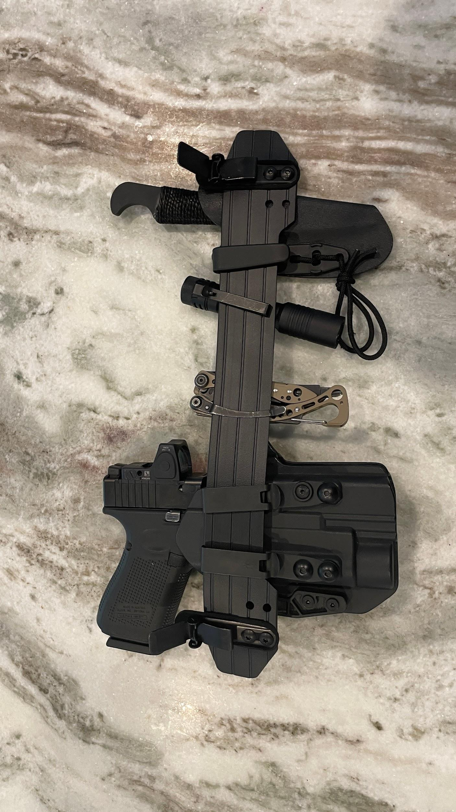

One of the biggest challenges with concealed carry is not necessarily concealment itself. It is consistency. A setup can work perfectly with jeans, a sturdy belt, and heavier clothing layers, but the moment summer arrives and you switch to lightweight gym shorts and athletic wear, a lot of those same systems immediately become uncomfortable, unstable, or impractical.
That is exactly where the LeisureCarry Clip-On Belt XL ended up surprising me.
During the warmer months, lightweight gym shorts are basically a staple in my wardrobe. They are comfortable, breathable, and honestly just make sense for day-to-day life during summer. The downside is that most carry systems are clearly designed around more structured clothing. Without a belt supporting the load, you quickly start dealing with sagging waistbands, shifting positions, excessive printing, or hotspots that become irritating after only a few hours.
The LeisureCarry platform addressed those issues far better than I initially expected.
Why the XL Version
I specifically opted for the XL, and that decision ended up being one of the biggest contributors to comfort and overall stability.
The reasoning was fairly simple. I wanted to spread the clips as far apart across my hips as possible. With lighter athletic clothing, distributing the load becomes critically important. When attachment points sit too close together, the entire setup tends to pivot and shift during movement. Widening the footprint plants the system and keeps it balanced rather than concentrating all the weight in one small area.

That extra width also created more usable real estate for mounting additional items. Rather than building a setup solely around carrying a firearm, I wanted something that could support a more complete everyday carry loadout. The XL configuration gave me enough room to comfortably integrate a knife, multitool, or tourniquet without making the entire setup feel bulky or overcrowded.
That modularity ended up being one of my favorite aspects overall.
Comfort Matters More Than Most People Admit
A lot of people focus heavily on concealment performance, retention, or accessory compatibility. Those things absolutely matter. But comfort is what ultimately determines consistency. If a carry setup constantly digs into your side, shifts around while moving, or becomes annoying after a few hours, chances are it gets left behind more often than intended.

What stood out here was how wearable the system felt over longer periods. Once adjusted properly, it stayed surprisingly stable even with lightweight gym shorts that normally struggle to support much weight at all. Walking, driving, bending over, moving around throughout the day -- none of it felt awkward or overly restrictive. More importantly, the setup avoided creating that constant awareness that something heavy is hanging off the waistband.
After a while, I genuinely found myself forgetting I was wearing it. That is honestly one of the biggest compliments I can give any carry system.
Experimenting With Clip Options
Naturally, I started experimenting.
One of the first modifications I tried was replacing the factory Ulticlips with smaller Discreet Carry Concepts clips. On paper it seemed like a smart change. DCC clips are widely respected, extremely low profile, and generally excellent hardware.

And to be fair, they did accomplish part of what I wanted. The smaller clips cleaned up the overall footprint slightly and reduced visual bulk a bit.
But there was a tradeoff. The system became noticeably more difficult to remove when needed. What I gained in slimness and rigidity came at the expense of convenience and ease of use. For some people that tradeoff may absolutely be worthwhile depending on their priorities, but after spending time with both configurations I found myself preferring the factory Ulticlips for day-to-day practicality.

The stock setup simply struck a better balance between security and usability for the way I personally carry. This is worth mentioning because there is always a temptation in the EDC and concealed carry space to immediately swap parts or upgrade hardware. Sometimes those modifications genuinely improve a product. Other times the factory configuration exists for a reason.
Modularity Without Becoming Excessive
Another area where this setup worked well was balancing modularity without becoming overly complicated. There is a real line between building capability and overloading a carry setup to the point where it becomes cumbersome. Once you start stacking too many accessories into too small of a footprint, comfort and concealment tend to disappear quickly.

The wider XL layout helped avoid that issue by giving each item enough space to sit naturally instead of everything fighting for room. Even with additional gear mounted, the setup maintained a relatively streamlined profile and distributed weight well enough to remain comfortable throughout the day.
The Owner Experience
One thing that genuinely elevated the experience was interacting directly with Ron throughout the process. I messaged him several times discussing setup combinations, mounting options, and what configurations seemed to work best depending on how much gear I planned to carry. Those conversations never felt rushed or sales-driven. It was more like talking with someone who actively uses and refines the product themselves.
That kind of accessibility is becoming increasingly rare. There is something refreshing about getting thoughtful feedback from the actual person behind the product instead of bouncing through generic customer service. In a market flooded with mass-produced gear and faceless companies, interactions like that stand out.
The Clip-On Belt solved a real problem: how do you comfortably carry during summer in lightweight athletic clothing without constantly adjusting your gear or sacrificing capability? For a category that is harder to get right than most people realize, this platform delivered. The XL configuration improved stability significantly, the modularity allowed for a complete loadout rather than just a firearm, and the comfort made it genuinely easy to wear all day. The factory Ulticlips proved their worth over aftermarket alternatives. Add in direct access to the owner and a willingness to help dial in your specific setup, and the entire experience feels far more intentional than simply buying another piece of gear online.